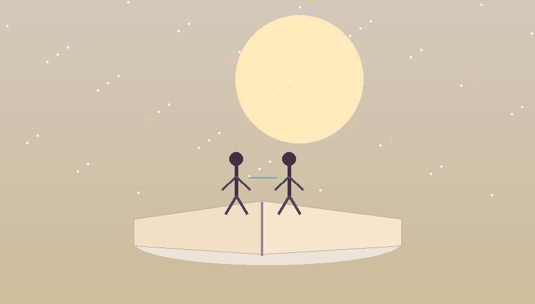
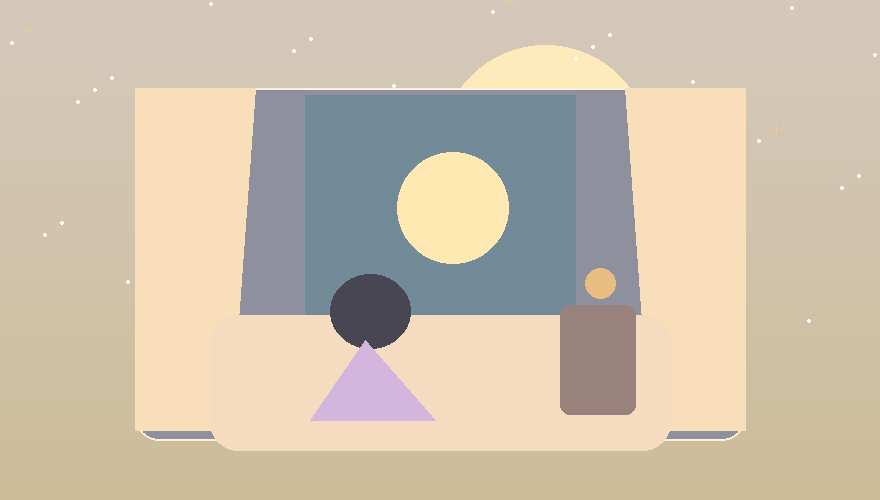
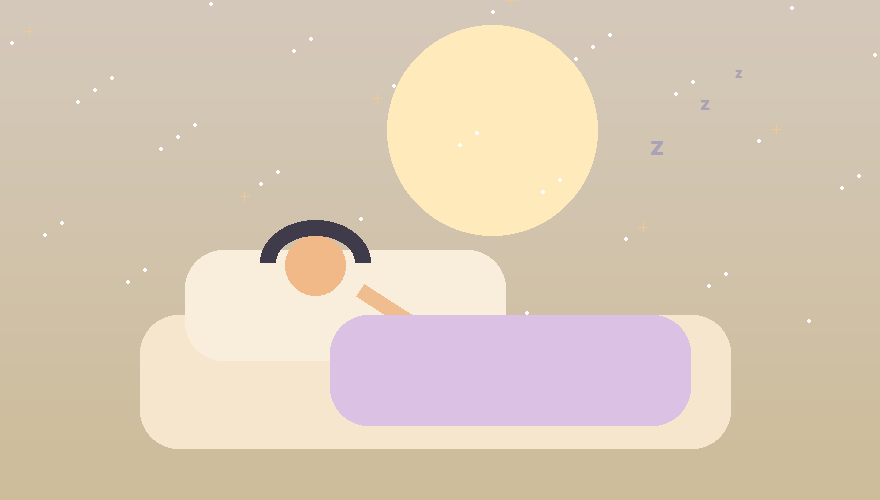

معنى الأحلام
ماذا يعني الحلم بشريك سابق؟
قد يظهر الشريك السابق في الحلم فتستيقظ مع مشاعر كثيرة. هذه قراءة هادئة لا تخوّف ولا تقدّم وعوداً حاسمة.

مقالات هادئة عن الأحلام والرموز والنوم والقمر والأسماء. مختصرة وإنسانية وواضحة.
قد يظهر الشريك السابق في الحلم فتستيقظ مع مشاعر كثيرة. هذه قراءة هادئة لا تخوّف ولا تقدّم وعوداً حاسمة.

أحلام الأحبة الراحلين قد تبدو واقعية جداً. نقرأها من زاوية الذاكرة والارتباط والاشتياق، لا من زاوية الخوف.

يختفي الحلم أحياناً قبل أن نفتح أعيننا جيداً. هذه عادات بسيطة تساعدك على تذكّر الصور الليلية مدة أطول.
